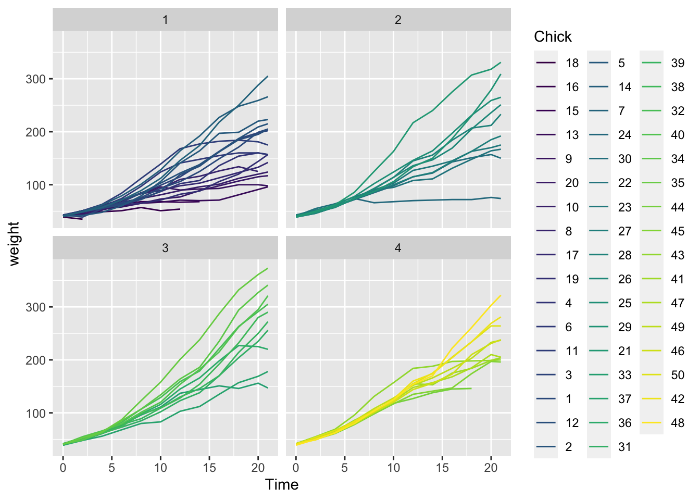

12 Advanced skills
There are a bunch of useful & fun skills that we will not have time to cover during this workshop.
12.1 Version control
Version control is a neat way to track the changes that you have made to your code over time so that you can restore previous versions if you break your code. Check out Happy Git and GitHub for the useR for more information
12.2 Interactive visualization
With big data sets, it is sometimes useful & fun to be able to create an interactive visualization of your data. This can be useful both when you are exploring your data and sharing it with others. Check out shiny applications for more information.
12.3 Advanced tidyverse
12.3.1 nest
ChickWeight %>%
glimpse()
# Rows: 578
# Columns: 4
# $ weight <dbl> 42, 51, 59, 64, 76, 93, 106, 125, 149, 171, 199, 205, 40, 49, 5…
# $ Time <dbl> 0, 2, 4, 6, 8, 10, 12, 14, 16, 18, 20, 21, 0, 2, 4, 6, 8, 10, 1…
# $ Chick <ord> 1, 1, 1, 1, 1, 1, 1, 1, 1, 1, 1, 1, 2, 2, 2, 2, 2, 2, 2, 2, 2, …
# $ Diet <fct> 1, 1, 1, 1, 1, 1, 1, 1, 1, 1, 1, 1, 1, 1, 1, 1, 1, 1, 1, 1, 1, …ChickWeight %>%
group_by(Chick, Diet) %>%
nest()
# # A tibble: 50 × 3
# # Groups: Chick, Diet [50]
# Chick Diet data
# <ord> <fct> <list>
# 1 1 1 <tibble [12 × 2]>
# 2 2 1 <tibble [12 × 2]>
# 3 3 1 <tibble [12 × 2]>
# 4 4 1 <tibble [12 × 2]>
# 5 5 1 <tibble [12 × 2]>
# 6 6 1 <tibble [12 × 2]>
# 7 7 1 <tibble [12 × 2]>
# 8 8 1 <tibble [11 × 2]>
# 9 9 1 <tibble [12 × 2]>
# 10 10 1 <tibble [12 × 2]>
# # … with 40 more rowsChickWeight_nest <- ChickWeight %>%
group_by(Chick, Diet) %>%
nest()
ChickWeight_nest$data[1:2]
# [[1]]
# # A tibble: 12 × 2
# weight Time
# <dbl> <dbl>
# 1 42 0
# 2 51 2
# 3 59 4
# 4 64 6
# 5 76 8
# 6 93 10
# 7 106 12
# 8 125 14
# 9 149 16
# 10 171 18
# 11 199 20
# 12 205 21
#
# [[2]]
# # A tibble: 12 × 2
# weight Time
# <dbl> <dbl>
# 1 40 0
# 2 49 2
# 3 58 4
# 4 72 6
# 5 84 8
# 6 103 10
# 7 122 12
# 8 138 14
# 9 162 16
# 10 187 18
# 11 209 20
# 12 215 2112.3.2 broom
# Load libraries
require(broom)
# Loading required package: broomCheck out the broom vignette.
And the broom and dplyr vignette.
tidy: constructs a tibble that summarizes the model’s statistical findings. This includes coefficients and p-values for each term in a regression, per-cluster information in clustering applications, or per-test information for multtest functions.
glance: construct a concise one-row summary of the model. This typically contains values such as R^2, adjusted R^2, and residual standard error that are computed once for the entire model.
ChickWeight %>%
group_by(Chick, Diet) %>%
nest() %>%
mutate(
fit = map(data, ~ lm(weight ~ Time, data = .x)),
tidied = map(fit, tidy),
glanced = map(fit, glance)
) %>%
unnest(tidied)
# # A tibble: 100 × 10
# # Groups: Chick, Diet [50]
# Chick Diet data fit term estimate std.error statistic p.value
# <ord> <fct> <list> <list> <chr> <dbl> <dbl> <dbl> <dbl>
# 1 1 1 <tibble> <lm> (Intercept) 24.5 6.73 3.64 4.56e- 3
# 2 1 1 <tibble> <lm> Time 7.99 0.524 15.3 2.97e- 8
# 3 2 1 <tibble> <lm> (Intercept) 24.7 4.93 5.01 5.26e- 4
# 4 2 1 <tibble> <lm> Time 8.72 0.384 22.7 6.15e-10
# 5 3 1 <tibble> <lm> (Intercept) 23.2 5.08 4.56 1.04e- 3
# 6 3 1 <tibble> <lm> Time 8.49 0.396 21.5 1.08e- 9
# 7 4 1 <tibble> <lm> (Intercept) 32.9 4.01 8.21 9.42e- 6
# 8 4 1 <tibble> <lm> Time 6.09 0.312 19.5 2.70e- 9
# 9 5 1 <tibble> <lm> (Intercept) 16.9 7.56 2.24 4.93e- 2
# 10 5 1 <tibble> <lm> Time 10.1 0.588 17.1 9.88e- 9
# # … with 90 more rows, and 1 more variable: glanced <list>ChickWeight %>%
ggplot() +
geom_line(aes(x = Time,
y = weight,
color = Chick)) +
facet_wrap(~ Diet)